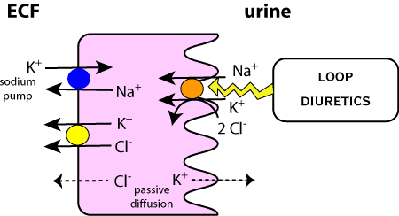

Sites of action.
Frusemide (furosemide USAN) is the most widely used diuretic
in man and animals, almost to the exclusion of everthing else.
It inhibits active chloride transport in the thick ascending limb of the loop
of Henle which decreases the total resorption of Na+ and Cl- and K+. This decreases
osmolality of the medulla and increases the osmolality of the filtrate presented
to the DCT (normally this is hypo-osmalar) to help water resorption, but it
is now iso-osmolar and therefore much more water goes through to the distal
tubules to the collecting duct. Sodium loss can be dramatic.
Frusemide redistributes blood flow from the juxtamedullary area to the outer
cortical regions - it may also act as a venodilator and increase systemic and/or
pulmonary venous capacitance.
It is used as the main diuretic in all species and when there is fluid retention
secondary to heart failure:
small animals - congestive cardiomyopathy, pulmonary oedema, cerebral oedema,
hypercaluric nephropathy, uraemia, hyperkalaemia and occasionally for hypertension
cattle - post-parturient udder oedema
(horses - to help reduce epistaxis by depleting circulating blood volume further,
one of the main drugs used illegally in racehorses)
Absorption - iv onset in 5 minutes, peak effect in 30 minutes, duration
2 hours
oral onset in 1 hour, peaks at 1-2 hours, duration 6 hours
Distribution - highly protein bound - 95 %
Metabolism - half life 15 min - 2 hours, may be increased in renal
failure, uraemia, congestive heart failure and neonates. Not very much metabolised
Elimination - small fraction filtered by the glomerulus, rest secreted
into the proximal renal tubules by an organic anion pump which is inhibited
by probenecid
This drug is very potent and is easy to overdose. Overdosage leads to dehydration
which may be severe. This may also decrease the clearance of concurrently administered
drugs and has the potential to cause toxicity eg. digoxin.
Hypokalaemia which may be predisposed to by anorexia (remember digoxin)
Hyponatraemia
Tolerance develops
pre-existing electrolyte imbalances or conditions that may lead to these eg. vomiting, diarrhoea
aminoglycosides, tetracyclines, (cephaloridine) to increase proximal convoluted tubule nephrotoxicity. Potentiates the effects of digoxin. Possible interactions with ACE inhibitors.
Bumetanide is similar to frusemide but more potent. May be more useful in large animals.
back to diuretics